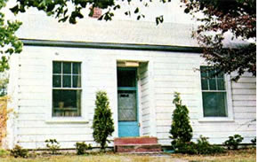
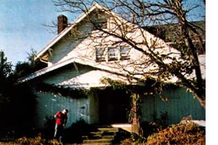
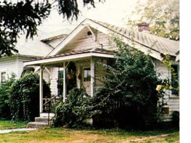
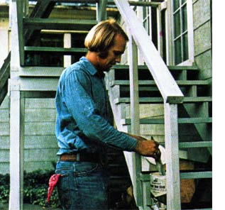
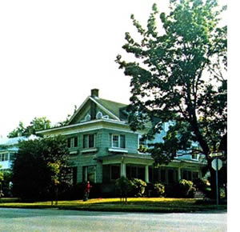

Out-and-out land speculation is one thing . . . but buying, cleaning up, renting out, and selling quality older homes for a profit is another. Quite possibly, it's just the "home business" you've been looking for!
If you're like most people, you probably feel that a landlord is just another one of those negative city things to be avoided at all costs. And-chances are-the thought of actually becoming a landlord yourself is the furthest thing from your mind.
Well, think again. Managing your own rental units can be an excellent way to [1] live rent-free, [2] be your own boss, and [3] build a healthy chunk of capital with which to finance other ventures (a move to the country, perhaps).
"That's great," you're probably saying, "if you've got the money to buy rental property in the first place." But wait! That's the beauty of the apartment-rental business: You don't have to be wealthy (or even moderately well off) to "break in". In fact, you can even start from scratch!
Take Cathy and Larry Passmore, for example. Six years ago, the couple left college with no money, no jobs, and no place to live. In order to keep food on the table, they took a job managing an apartment complex in Corvallis, Oregon (the small college town in which they had been living). Eventually, the Passmores did find outside jobs: Larry in landscape maintenance, Cathy as a waitress. At that point, the couple's earnings as apartment managers paid the rent, and most of their "regular job" earnings went into savings.
Then one day Larry spotted a small fix-itup house for sale near downtown. He and Cathy discussed the possibility of buying the place and renting it out, and-although everyone they talked to told them that rental property ownership was an incredible hasslethey decided to go ahead and give the idea a try. Cathy and Larry made a modest down payment on the $7,800 dwelling, set to work repairing it . . . and-after six months of evening, weekend, and lunch-break labor-they rented the home for $135 per month.
Over the next couple of years (while their first house was paying for itself) the Passmores bought two more houses andagain-spent about six months fixing each of them up. Both units were rented with no difficulty.
Before long, two of the realtors in town (who had heard of Cathy and Larry's growing rental business) approached the couple and asked them if they'd be interested in an ancient fraternity-house-turned-apartmentbuilding. The dwelling (a "ten-plex" built in 1911) was in desperate need of repairs and-as a result-the price had been reduced to a low (for that size dwelling) $37,000. Would the Passmores like to buy it?
Larry and Cathy hesitated. (It was, after all, a big house and a lot of money.) But they finally decided to purchase the old place and renovate it ... which meant giving up their fulltime jobs in order to devote the attention to the house that it needed. (Meanwhile-to offset the cost of repairs-the Passmores made and sold birdhouses, cutting boards, and Christmas tree ornaments during their "off" hours.)
Today, Cathy and Larry's rental property holdings (one $7,600 house and the $37,000 ten-plex) are worth -roughly-twice what they paid for them. The couple has bought and sold (for a profit) several other small dwellings, and their current rentals bring them a gross monthly income of $1,135. In short, the Passmores now have what they've always wanted: a degree of financial independence and the freedom to work when they want at a job they like . . . for a boss (themselves) that they can really get along with.
OK. Let's assume you want to "break into" the apartment rentals business. Probably the best way to start is to manage someone else's rental units for a while. This'll enable you to determine whether or not you like the work before you make any financial commitments.
Check the want-ad columns of your local paper. Apartment-manager positions are usually plentiful. Of course, you can never be sure how any given job will work out . . . but if a situation doesn't suit you, you haven't lost anything. (In fact, you're knowledge and experience ahead.)
Arrangements do vary. The Passmores' first job, for instance, was with a large rental corporation that owned units all over town. For the corporation's tax purposes, Cathy and Larry did have to pay rent on their apartment, but they were each paid $2.50 an hour for their time plus one percent of the monthly gross (which didn't amount to much). The best part of the deal was that Larry and Cathy were able to earn more than their rent by doing minor fix-up jobs at the other apartments operated by the corporation.
After three months with their original employer, however, the couple moved on to a better job managing an older apartment house. (Three months was the minimum they'd promised to stay. The Passmores feel it's important to give your boss a "minimum stay" time up front, then stick to it. You'll get a better recommendation in the end.)
Older apartment houses offer a couple of important advantages for first-time managers. In the first place, an aged building requires more maintenance than a newer one, which means that your time and skill as a repairperson become more valuable to your employer. Second, the unit you live in (assuming that it, too, is old) will have a low rent and-consequently-you won't find yourself working to support a dishwasher, an expensive shag rug, and/or other "luxuries".
Once you do find a good setup (and it's only a matter of time until you do), stay with it. The Passmores say that one of their secrets of success is that-throughout their apartment-renting career (even to this day)they've lived essentially rent-free by managing someone else's units. (Their present apartment-a $175-per-month unit with a fireplace and beautiful old wooden floors-is no dump, either!)
Success in the rental business depends-in part-on your ability to make wise purchasing decisions . . . so while you're saving up money for a down payment, become familiar with the local real estate situation. Keep your eyes open for a lowpriced (the lower the better), cosmetically poor-but structurally soundhouse located in a good neighborhood.
All of the properties the Passmores have bought over the past six years had been on the market for quite some time before Cathy and Larry discovered them. Also, the homes' owners-in each case-carried the contracts, because the banks wouldn't make loans on the houses. "We've never had a bank mortgage," Larry says. "And actually, that's good. By getting the previous owner to carry the contract, we've been able to buy places for as little as $1,500 down, with interest rates two or more percentage points below the going bank loan rates."
Of course, if you're "lucky" enough to get bank financing, the lending institution will see to it that the house you're buying has clear title, has been recently surveyed, is insurable, etc. Otherwise, you'll have to take it upon yourself to ascertain the status of the title, survey, insurance coverage(s), and so on. When in doubt, retain a real estate lawyer.
It's important, too, not to be overly optimistic about the house, duplex, or apartment building you're considering buying. Cathy and Larry always assumed the worst about the place in question, no matter what its apparent condition. They figured that if they could come out even on a house after everything that could possibly go wrong did go wrong, the place was a good buy. (That way, if the water heater didn't burst as expected ... they came out ahead.) "It's better to be safe than sorry," says Larry.
Once you've made your purchase, it's time to remodel the house, duplex, or apartment. Here again, it doesn't pay to be optimistic: Each of the Passmores' residences, for instance, took about six months of spare-time work to make livable . . . about twice as long as expected. (Needless to say, the couple learned very quickly not to predict completion dates for anxious renters.) Cathy and Larry will be the first to admit that remodeling is long, hard work. "You have to really enjoy what you're doing," Cathy says. "Luckily, we do."
The Passmores' love for their work is reflected in the way they've furnished their apartments. Instead of equipping the units with self-destruct plastic tables and chairs, the Passmores bought the best old wooden furniture they could afford. They figured that the tenants would feel more "at home" with such items, and that the furnishings wouldrather than depreciate-actually become more valuable with time.
Other landlords told Cathy and Larry that they were crazy to put so much effort into making their places nice "just for renters". The couple has found, however, that their efforts pay off in the long run: They've never had the slightest bit of trouble, for instance, with theft or vandalism . . . and they've never shown an apartment or house without renting it on the spot.
Obviously, before you put your newly renovated house, duplex, or apartment on the market, you have to decide how much rent to charge. Depending on the type of unit you're offering and the housing situation in your particular area, this can vary considerably. "We figure on a minimum of one percent of the house's value per month, plus something extra to cover expenses," explains Larry. "For instance, if you have a house that's worth $10,000, you should figure on charging at least $100-or one percent-per month, plus say $20 or $30 additional to pay for plumbing repairs, cleaning materials, etc. A total, in other words, of $120 or $130 a month.
"In general," Larry continues, "we try to give everyone-including ourselves-agood deal. Our rates-$135 a month for the small house and $100 a month, average, for the ten units in our apartment building-are about 25% below the going rate for equivalent housing in town. The tenants, naturally, are happy about this ... and we're happy, because our loan payments right now are only about $350 per month, while our gross monthly income is around $1,100."
Larry and Cathy definitely recommend taking a cleaning deposit on every rental unit. "But here again," says Larry, "we don't try to take advantage of anyone. All we require in the way of `security' is half a month's rent, refundable when the tenant leaves."
The Passmores have never required their tenants to sign leases, and don't recommend the practice. (Leases, Cathy and Larry feel, are simply crutches used by landlords who have trouble renting their properties.) "It's true that you lose money whenever your units are vacant," Larry explains. "We figure, though, that tenants who are forced to stay and pay under the terms of a lease are going to be unhappy tenants, and unhappy tenants are going to find some small, unpleasant ways of showing you what they think of your policies."
The Passmores must be doing something right: In six years as landlords, they've lost exactly $5.00 in unpaid rent!
"Landlords have a certain stereotype as sinister figures," says Cathy, "probably because so many apartment owners are of the absentee type ... wealthy people who just want their checks every month. That kind of attitude is what takes the human element out of landlord-tenant relations."
Cathy and Larry, on the other hand, feel that good landlord-tenant relations are important. They make a point of getting to know their tenants as friends, and often start by having new renters over for dinner. Likewise, the Passmores take care of repairs and yard work themselves . . . and they don't make a big scene if a tenant is just a few days late with rent. (More important, they don't raise the rent just for the sake of raising it.)
Of course, it helps to find the right kind of tenants in the first place . . . people who'll appreciate the work that's gone into your apartment or house. In this regard, it's best-the Passmores say-to eliminate the negative and accentuate the positive in your ads. Rather than say "NO pets, NO children, NO drinkers," etc., Cathy and Larry write ads something like: "Close to campus, small but cozy house, freshly painted. Wooden furniture included."
The results of such advertisements have, for Cathy and Larry, been unexpectedly good. Even during a housing surplus, they had people standing in line to rent their first house. (Now, of course, the Passmores don't have to advertise. Word has spread about them, and their units are in great demand.)
Larry Passmore feels that the lack of strong competition is one of the most attractive features of the apartmentrenting business. In many fields of endeavor, it's difficult (if not impossible) for newcomers to compete with established concerns. Not so in the property-rental business: The minute you put a unit up for rent, that unit has as much chance of being taken (all things being equal) as any apartment in town. And-since many landlords don't even try to please renters-it's not difficult to offer a much superior item . . . and reap the rewards thereof.
A stint as a landlord could be a great way to raise money to buy a small farm ... but the Passmores would be the first to caution you against entering the business just for that reason. Cathy and Larry argue that it's hard to enjoy doing something if the activity in question is only a means to an end. "The whole idea is to really love what you're doing now," Larry explains. "We see so many people working at jobs they hate. They keep telling themselves that they're just going to save a little more money and then do whatever it is they really want to do. But they never make the change.
"We like our work and we like having the time to do the things we want to do. To us, this is what's important."
Who knows, though? You may well find (as Cathy and Larry Passmore have) that you really enjoy purchasing, fixing up, renting out, and paying off old houses. To say it another way: You may well find-once you've tried it yourself-that "landlord" really doesn't have to be a dirty word!
|
 One of the Passmores' rental properties |
 Larry catches up on yardwork at Schoolcraft House, a set of apartments he and Cathy manage for another landlord |
Cathy brings a box lunch. One of the advantages of being your own boss is that you can eat whenever you want |
|
 The Passmores have bought, renovated, and sold several houses like this one over the past six years. |
 Larry gives the ten-plex's fire escape a fresh coat of paint |
 The tenplex, also known as The Cathryn Apartments |